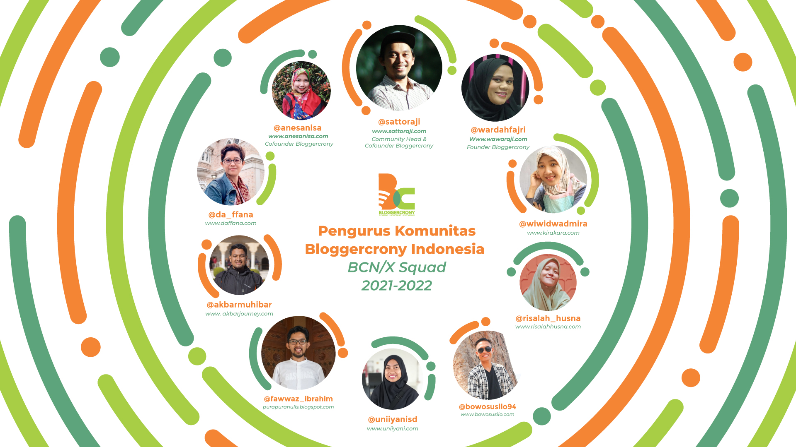

“Komunitas Bloggercrony Indonesia bertambah usia, tepat hari ini 24 Februari 2015 silam, hadir menjadi fasilitator dan teman belajar serta bertumbuh bersama bloggers Indonesia.”
The concept for this logo was to make a sense of community and family. That’s why the main element was a circle. It’s a social circle. I made a diagram for each element for the logo concept, as you can see. Working with this community was so fun and also packed, the timeline is a little bit thight
but thank god me and the team can finished it on time. Remembering this was a pandemic era event, so we work on everything online. Thank you bloggercrony for the opportunity! See the full recap of the event on their Instagram: @bloggercrony
Selected Project
2021